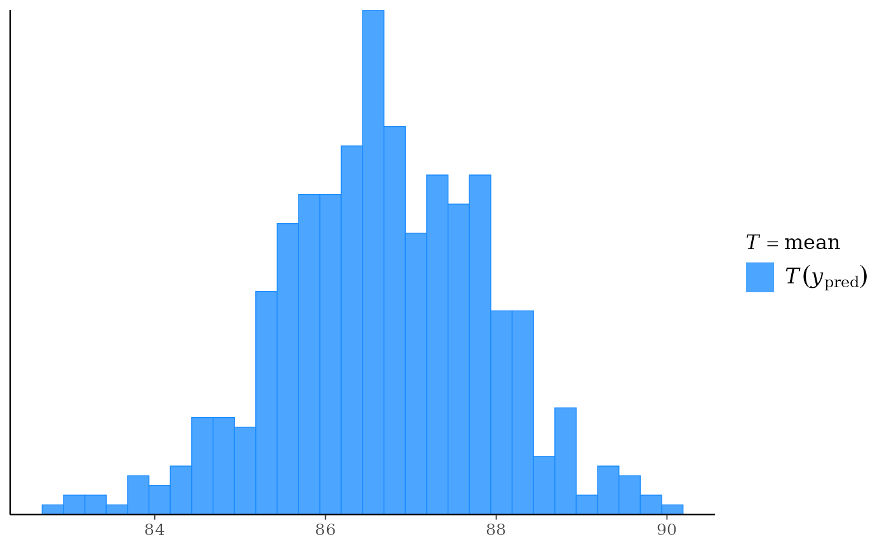
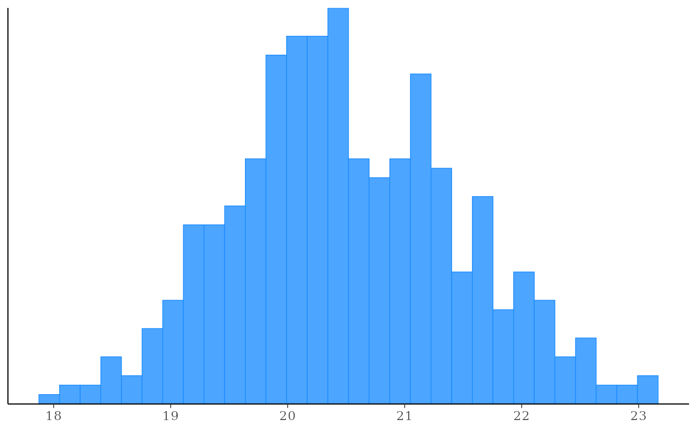
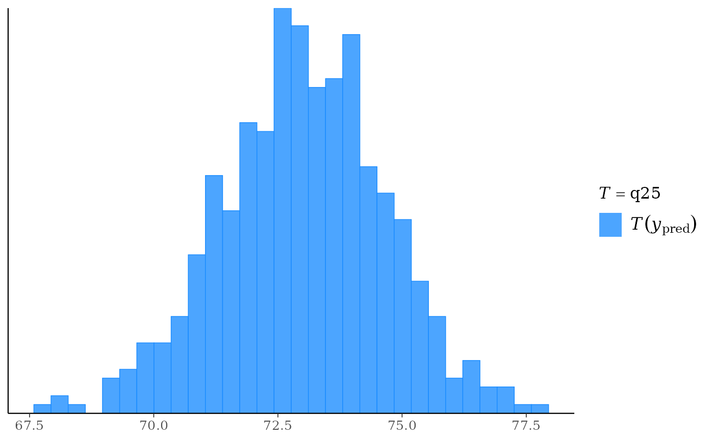

The distribution of a (test) statistic T(ypred), or a pair of (test)
statistics, over the simulations from the posterior or prior predictive
distribution. Each of these functions makes the same plot as the
corresponding ppc_ function but without comparing to
any observed data y. The Plot Descriptions section at
PPC-test-statistics has details on the individual plots.
Usage
ppd_stat(
ypred,
stat = "mean",
...,
discrete = FALSE,
binwidth = NULL,
bins = NULL,
breaks = NULL,
freq = TRUE
)
ppd_stat_grouped(
ypred,
group,
stat = "mean",
...,
discrete = FALSE,
facet_args = list(),
binwidth = NULL,
bins = NULL,
breaks = NULL,
freq = TRUE
)
ppd_stat_freqpoly(
ypred,
stat = "mean",
...,
facet_args = list(),
binwidth = NULL,
bins = NULL,
freq = TRUE
)
ppd_stat_freqpoly_grouped(
ypred,
group,
stat = "mean",
...,
facet_args = list(),
binwidth = NULL,
bins = NULL,
freq = TRUE
)
ppd_stat_2d(ypred, stat = c("mean", "sd"), ..., size = 2.5, alpha = 0.7)
ppd_stat_data(ypred, group = NULL, stat)Arguments
- ypred
An
SbyNmatrix of draws from the posterior (or prior) predictive distribution. The number of rows,S, is the size of the posterior (or prior) sample used to generateypred. The number of columns,N, is the number of predicted observations.- stat
A single function or a string naming a function, except for the 2D plot which requires a vector of exactly two names or functions. In all cases the function(s) should take a vector input and return a scalar statistic. If specified as a string (or strings) then the legend will display the function name(s). If specified as a function (or functions) then generic naming is used in the legend.
- ...
Currently unused.
- discrete
For
ppc_stat()andppc_stat_grouped(), ifTRUEthen a bar chart is used instead of a histogram.- binwidth
Passed to
ggplot2::geom_histogram(),ggplot2::geom_area(), andggdist::stat_dots()to override the default binwidth.- bins
Passed to
ggplot2::geom_histogram()andggplot2::geom_area()to override the default binning.- breaks
Passed to
ggplot2::geom_histogram()as an alternative tobinwidth.- freq
For histograms and frequency polygons,
freq=TRUE(the default) puts count on the y-axis. Settingfreq=FALSEputs density on the y-axis. (For many plots the y-axis text is off by default. To view the count or density labels on the y-axis see theyaxis_text()convenience function.)- group
A grouping variable of the same length as
y. Will be coerced to factor if not already a factor. Each value ingroupis interpreted as the group level pertaining to the corresponding observation.- facet_args
A named list of arguments (other than
facets) passed toggplot2::facet_wrap()orggplot2::facet_grid()to control faceting. Note: ifscalesis not included infacet_argsthen bayesplot may usescales="free"as the default (depending on the plot) instead of the ggplot2 default ofscales="fixed".- size, alpha
For the 2D plot only, arguments passed to
ggplot2::geom_point()to control the appearance of scatterplot points.
Value
The plotting functions return a ggplot object that can be further
customized using the ggplot2 package. The functions with suffix
_data() return the data that would have been drawn by the plotting
function.
Details
For Binomial data, the plots may be more useful if the input contains the "success" proportions (not discrete "success" or "failure" counts).
References
Gabry, J. , Simpson, D. , Vehtari, A. , Betancourt, M. and Gelman, A. (2019), Visualization in Bayesian workflow. J. R. Stat. Soc. A, 182: 389-402. doi:10.1111/rssa.12378. (journal version, arXiv preprint, code on GitHub)
See also
Other PPDs:
PPD-distributions,
PPD-intervals,
PPD-overview
Examples
yrep <- example_yrep_draws()
ppd_stat(yrep)
#> `stat_bin()` using `bins = 30`. Pick better value `binwidth`.

ppd_stat(yrep, stat = "sd") + legend_none()
#> `stat_bin()` using `bins = 30`. Pick better value `binwidth`.

# use your own function for the 'stat' argument
color_scheme_set("brightblue")
q25 <- function(y) quantile(y, 0.25)
ppd_stat(yrep, stat = "q25") # legend includes function name
#> `stat_bin()` using `bins = 30`. Pick better value `binwidth`.
